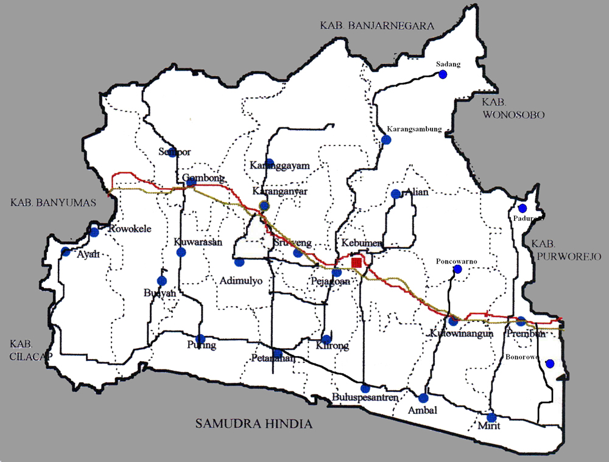
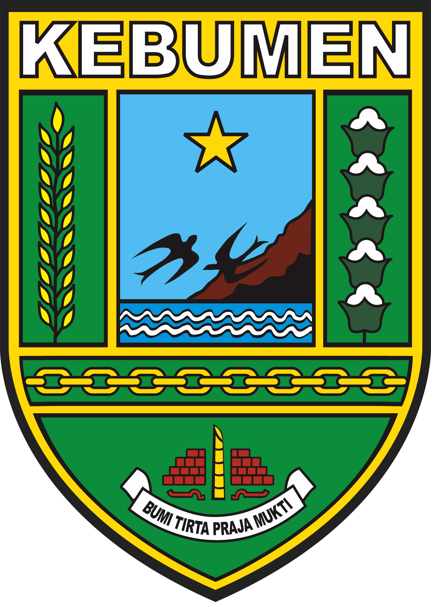
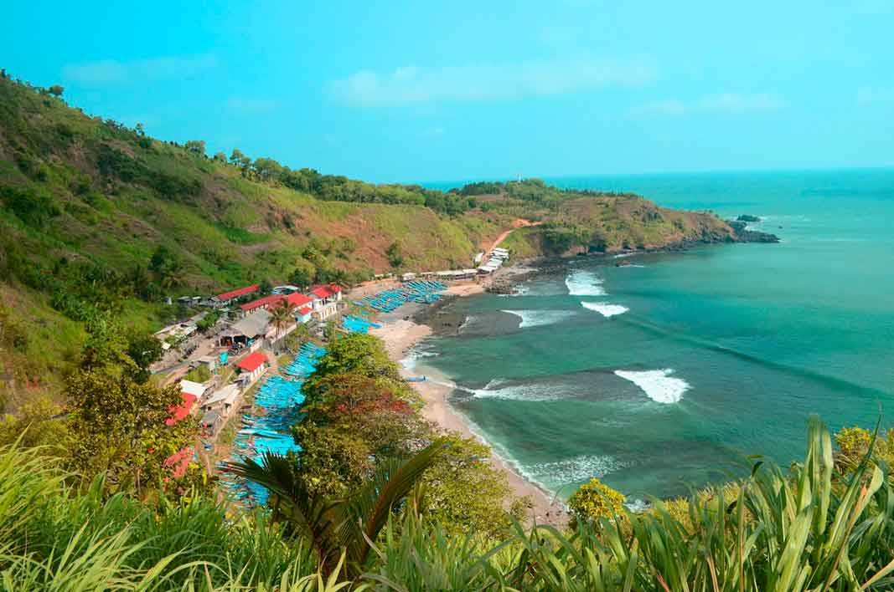
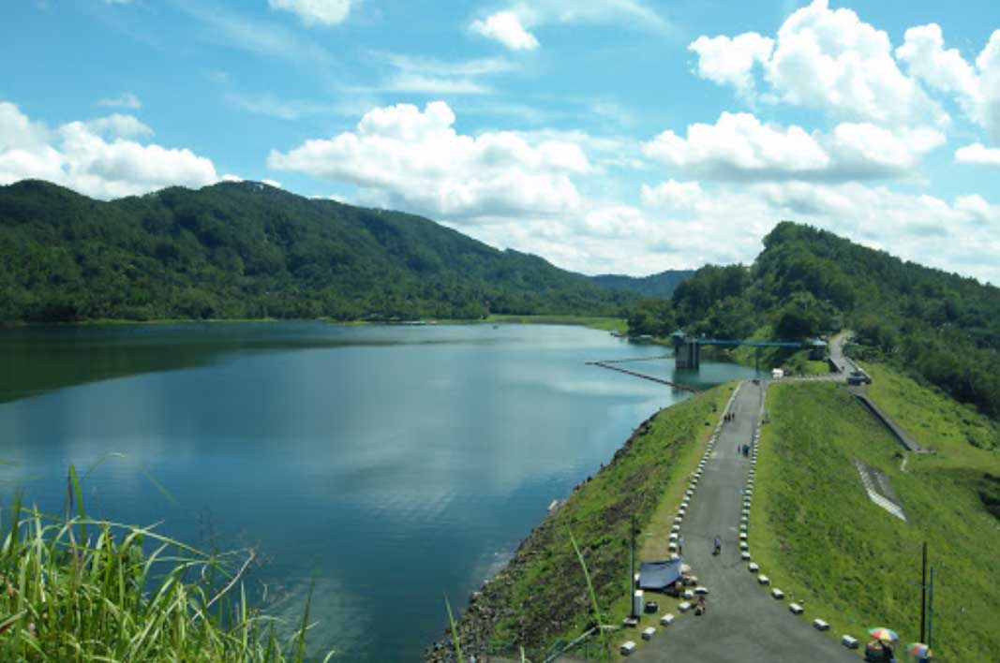
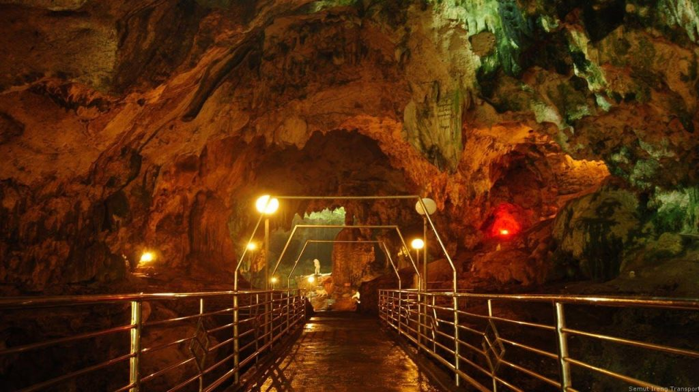

Deskripsi
Kebumen merupakan sebuah Kabupaten di Provinsi Jawa Tengah dengan ibukotanya yaitu Kota Kebumen.
Kabupaten ini berbatasan dengan Kabupaten Banjarnegara di utara, Kabupaten Wonosobo, dan Kabupaten
Purworejo di timur, Samudra Hindia di selatan, serta Kabupaten Cilacap, dan Kabupaten Banyumas di
sebelah barat.
Sejarah
Sejarah awal mulanya adanya Kebumen tidak dapat dipisahkan dengan sejarah Mataram Islam. Hal ini
disebabkan adanya beberapa keterkaitan peristiwa yang ada dan dialami Mataram membawa pengaruh bagi
terbentuknya Kebumen yang masih dalam lingkup kerajaan Mataram. Di dalam struktur kekuasaan Mataram,
lokasi Kebumen termasuk di daerah Manca Negara Kulon (wilayah Kademangan Karanglo) dan masih di
bawah Mataram.
Berdasarkan Perda Kab. Kebumen nomor 1 tahun 1990 tentang Penetapan Hari Jadi Kabupaten Kebumen dan
beberapa sumber lainnya dapat diketahui latar belakang berdirinya Kabupaten Kebumen ada beberapa
versi, yaitu :
Versi 1
Versi Pertama asal mula lahirnya Kebumen dilacak dari berdirinya Panjer. Menurut sejarahnya, Panjer
berasal dari tokoh yang bernama Ki Bagus Bodronolo. Pada waktu Sultan Agung menyerbu ke Batavia ia
membantu prajurit menjadi pengawal pangan dan kemudian diangkat menjadi senopati. Ketika Panjer
dijadikan kabupaten dengan bupatinya Ki Suwarno (dari Mataram), Ki Bodronolo diangkat menjadi Ki
Gede di Panjer Lembah (Panjer Roma) dengan gelar Ki Gede Panjer Roma I. Pengangkatan tersebut berkat
jasanya menangkal serangan Belanda yang akan mendarat di pantai Petanahan sedangkan anaknya Ki
Kertosuto sebagai patihnya Bupati Suwarno. Demang Panjer Gunung, adiknya Ki Hastrosuto membantu
ayahnya di Panjer Roma, kemudian menyerahkan jabatannya kepada Ki Hastrosuto dan bergelar Ki Panjer
Roma II. Tokoh ini sangat berjasa karena memberi tanah kepada Pangeran Bumidirja, yang terletak di
utara Kelokan sungai Lukulo dan kemudian dijadikan padepokan yang amat terkenal. Kedatangan Kyai P
Bumidirja menyebabkan kekhawatiran dan prasangka, maka dari itu beliau menyingkir ke desa Lundong
sedangkan Ki Panjer Roma II bersama Tumenggung Wongsonegoro Panjer gunung menghindar dari kerajaan
pihak Mataram. Sedangkan Ki Kertowongo dipaksa untuk taat kepada Mataram dan diserahi Penguasa dua
Panjer, sebagai Ki Gede Panjer III yang kemudian bergelar Tumenggung Kolopaking I (karena berjasa
memberi kelapa aking pada Sunan Amangkurat I). Dari Versi 1 dapat disimpulkan bahwa lahirnya Kebumen
mulai dari Panjer yaitu tanggal 26 Juni 1677.
Versi 2
Sejarah Kabupaten Kebumen dimulai sejak Tumenggung Arung Binang I yang masa mudanya bernama Jaka
Sangkrip yang berdarah Mataram dan dititipkan kepada pamannya Demang Kutawinangun. Setelah dewasa
lalu mencari ayahnya ke keraton Mataram dan setelah membuktikan keturunan Raja maka ia diangkat
menjadi Mantri Gladag, kemudian sampai Bupati Nayaka dengan Gelar Hanggawangsa. Setelah diambil
menantu oleh Patih Surakarta kemudian diangkat menjadi Tumenggung Arung Binang I sampai dengan
keturunannya yang ke-3 sedangkan Arung Binang IV sampai ke VIII secara resmi menjadi Bupati Kebumen.
Versi 3
Asal mula nama Kebumen adalah adanya tokoh Kyai Pangeran Bumidirja. Beliau adalah bangsawan ulama
dari Mataram, adik Sultan Agung Hanyokro Kusumo. Ia dikenal sebagai penasihat raja, yang berani
menyampaikan apa yang benar itu benar dan apa yang salah itu salah. Kyai P. Bumidirjo sering
memperingatkan raja bila sudah melanggar batas-batas keadilan dan kebenaran. Ia berpegang pada
prinsip yaitu agar raja adil dan bijaksana. Di samping itu juga ia sangat kasih dan sayang kepada
rakyat kecil. Kyai P. Bumidirjo memberanikan diri memperingatkan keponakannya, yaitu Sunan
Amangkurat I. Karena sunan ini sudah melanggar paugeran keadilan dan bertindak keras dan kejam.
Bahkan berkompromi dengan VOC (Belanda) dan memusuhi bangsawan, ulama, dan rakyatnya. Peringatan
tersebut membuat kemarahan Sunan Amangkurat I dan direncanakan akan dibunuh. Karena menghalangi
hukum qishos terhadap Kyai P. Pekik dan keluarganya (mertuanya sendiri).
Untuk menghadapi hal itu, Kyai P. Bumidirjo lebih baik pergi meloloskan diri dari kungkungan Sunan
Amangkurat I. Dalam perjalanan ia tidak memakai nama bangsawan, namun memakai nama Kyai Bumi saja.
Kyai P. Bumidirjo sampai ke Panjer dan mendapat hadiah tanah di sebelah utara kelok sungai Lukulo
pada tahun 1670. Pada tahun itu juga dibangun padepokan/pondok yang kemudian dikenal dengan nama
daerah Ki Bumi atau Ki Bumi-an, menjadi Kebumen.
Oleh karena itu bila lahirnya Kebumen diambil dari segi nama, maka versi Kyai Bumidirjo yang dapat
dipakai dan mengingat latar belakang peristiwanya tanggal 26 Juni 1677.
Berdasarkan bukti-bukti sejarah bahwa Kebumen berasal dari kata Bumi, nama sebutan bagi P. Kyai
Bumidirjo, mendapat awalan Ke dan akhiran an yang menyatakan tempat.
Hal itu berarti Kabumen mula-mula adalah tempat tinggal P. Bumidirjo.
Di dalam perjalanan sejarah Indonesia pada saat dipegang Pemerintah Hindia Belanda telah terjadi
pasang surut dalam perjalanan dan pelaksanaan belanja negara, keadaan demikian memuncak sampai
klimaksnya sekitar tahun 1930. Salah satu perwujudan pengetatan anggaran belanja negara itu adalah
penyederhanaan tata pemerintahan dengan penggabungan daerah-daerah Kabupaten (regentschaap).
Demikian pula halnya dengan Kabupaten Karanganyar dan Kabupaten Kebumen telah mengalami penggabungan
menjadi satu daerah Kabupaten menjadi Kabupaten Kebumen. Surat keputusan tentang penggabungan kedua
daerah ini tercatat dalam lembaran negara Hindia Belanda tahun 1935 nomor 629. Dengan ditetapkannya
Surat Keputusan tersebut maka Surat Keputusan terdahulu tanggal 21 Juni 1929 nomor 253 artikel nomor
121 yang berisi penetapan daerah Kabupaten Kebumen dinyatakan dicabut atau tidak berlaku lagi.
Ketetapan baru tersebut telah mendapat persetujuan Majelis Hindia Belanda dan Perwakilan Rakyat
(Volksraad).
Sebagai akibatnya ditetapkannya Surat Keputusan tersebut maka luas wilayah Kabupaten Kebumen yang
baru yaitu Kutowinangun, Ambal, Karanganyar, dan Kebumen. Dengan demikian Surat Keputusan Gubernur
Jenderal De Jonge Nomor 3 tertanggal 31 Desember 1935 dan mulai berlaku tanggal 1 Januari 1936 dan
sampai saat ini tidak berubah. Sampai sekarang Kabupaten Kebumen telah memiliki
Tumenggung/Adipati/Bupati sudah sampai 29 kali.
Geografis

Secara geografis, Kabupaten Kebumen terletak pada 7°27' - 7°50' Lintang Selatan dan 109°33' -
109°50' Bujur Timur. Bagian selatan Kabupaten Kebumen merupakan dataran rendah, sedangkan pada
bagian utara berupa pegunungan dan perbukitan yang merupakan bagian dari rangkaian Pegunungan Serayu
Selatan. Sementara itu di barat wilayah Gombong, terdapat Kawasan Karst Gombong Selatan sebuah
rangkaian pegunungan kapur yang membujur hingga pantai selatan berarah utara-selatan. Daerah ini
memiliki lebih dari seratus gua berstalaktit dan stalagmit. Sementara itu panjang pantai sekira 53
km yang sebagian besar merupakan pantai dengan fenomena gumuk pasir. Sungai terbesar di Kabupaten
Kebumen adalah Sungai Luk Ulo, Sungai Jatinegara, Sungai Karanganyar, Sungai Kretek, Sungai
Kedungbener, Sungai Kemit, Sungai Gombong, Sungai Ijo, Sungai Kejawang, dan Kali Medono.
Luas Wilayah
Kabupaten Kebumen mempunyai luas wilayah sebesar 158.111,50 ha atau 1.581,11 km² dengan kondisi
beberapa wilayah merupakan daerah pantai dan pegunungan, tetapi sebagian besar merupakan dataran
rendah.
Dari luas wilayah Kabupaten Kebumen, tercatat 49.768,00 hektare atau sekitar 31,04% sebagai
lahan sawah dan 108.343,50 hektare atau 68.96% sebagai lahan kering.
Menurut penggunaannya, sebagian besar lahan sawah beririgasi teknis dan hampir seluruhnya
(46,18%) dapat ditanami dua kali dalam setahun, sebagian lagi berupa sawah tadah hujan (37,82%)
yang di beberapa tempat dapat ditanami dua kali dalam setahun, serta 11,25% lahan sawah
beririgasi setengah teknis dan sederhana.
Lahan kering digunakan untuk bangunan seluas 40.985 hektare (37,73%), tegalan/kebun seluas
33.777,00 hektare (33,57&) serta hutan negara seluas 22.861,00 hektare (21,08%) dan sisanya
digunakan untuk padang penggembalaan, tambak, kolam, tanaman kayu-kayuan, serta lahan yang
sementara tidak diusahakan dan tanah lainnya.
Lambang

Lambang Kabupaten Kebumen ditetapkan berdasarkan Perda Kabupaten Dati II Kebumen No. 30a dan
30b/DPRD-GR/1970. Pada 15 Agustus 2021, Bupati Kebumen Arif Sugiyanto menyatakan bahwa lambang yang
digunakan di lingkungan Pemerintah Kabupaten Kebumen telah salah dan muncul dalam bermacam-macam
versi. Ia mengatakan bahwa hanya ada satu versi yang sesuai dengan Perda tersebut. Lambang tersebut
adalah benda sakral yang dimiliki Kabupaten Kebumen dan "jangan sembarangan ganti-ganti tanpa
aturan". Bagi Sugiyanto, ia beranggapan lambang tersebut memuat filosofi dan jatidiri masyarakat
Kebumen seluruhnya dengan beragam budaya dan kearifan lokal.
Bentuk, lukisan, ukuran, warna lukisan Lambang Daerah Kabupaten Kebumen adalah sebagai berikut :
Perisai
Dengan ukuran perbandingan 4:3
Menggambarkan tekad, semangat, dan kesiapsiagaan rakyat untuk mempertahankan Negara Kesatuan
Republik Indonesia yang diproklamasikan pada tanggal 17 Agustus 1945, dengan dasar Pancasila
dan
Undang-Undang Dasar 1945.
Bintang
Bintang segi lima berwarna emas
Menggambarkan kepercayaan yang teguh dan luhur terhadap Tuhan Yang Maha Esa.
Pegunungan
Melambangkan keteguhan hati, tidak goyah mengalami tantangan alam. Menggambarkan juga
sebagian
daerah Kabupaten Kebumen terdiri dari tanah pegunungan.
Gua
Mencerminkan sifat-sifat ketenangan dan kesederhanaan dari rakyat daerah Kabupaten Kebumen
dalam
usahanya untuk mencapai cita-citanya yaitu masyarakat yang adil dan makmur. Gua juga
merupakan
tempat dimana dihasilkan sarang burung.
Laut
Menggambarkan jiwa perjuangan yang selalu bergelora sepanjang masa, namun penuh dengan
kedamaian
yang abadi. Menggambarkan juga bahwa sebagian daerah Kabupaten Kebumen berbatasan dengan
Samudra
Indonesia.
Burung Lawet
Menggambarkan suatu sumber penghasilan daerah dan merupakan pencerminan dari ketekunan dan
kegesitan yang penuh dinamika dari rakyat daerah Kabupaten Kebumen dalam usahanya untuk
membangun daerahnya.
Kapas Padi
Menggambarkan cita-cita rakyat daerah Kabupaten Kebumen yaitu terwujudnya sutu masyarakat
adil
makmur berdasarkan Pancasila, murah sandang, murang pangan, dan cukup papan.
Mata Rantai
Mata rantai yang sambung menyambung
Menggambarkan jiwa semangat persatuan yang hidup di kalangan rakyat.
Bambu Runcing
Merupakan pencerminan dari sifat kepahlawanan rakyat dalam perang kemerdekaan mempertahankan
Negara Kesatuan Republik Indonesia yang diproklamasikan pada tanggal 17 Agustus 1945 dengan
dasar Pancasila dan Undang-Undang Dasar 1945.
Batu Bata dan Genting
Menggambarkan bahwa industri batu bata dan genting di Daerah Kabupaten Kebumen merupakan
sumber
penghidupan rakyat, secara simbolis menggambarkan bahwa kecuali sektor pertanian, sektor
perindustrian juga merupakan sumber penghasilan Rakyat Daerah Kabupaten Kebumen.
Tulisan Bhumi Tirta Praja Mukti
Arti kata-katanya :
Tanah dan air untuk kesejahteraan Bangsa dan Negara
Maksud dan jiwanya :
Bangsa Indonesia pada umumnya dan Warga Daerah Kabupaten Kebumen pada khususnya sangat
bersyukur
ke hadapan Tuhan Yang Maha Esa yang telah menganugerahi tanah yang subur dan air yang
berlimpah-limpah. Anugerah yang tidak ternilai harganya itu merupakan nikmat dari Tuhan yang
wajib kita manfaatkan sebaik-baiknya bagi kesejahteraan rakyat. Daerah Kabupaten Kebumen di
bagian Utara terdiri dari tanah pegunungan dengan aneka warna bahan-bahan tambang yang
terpendam
dan dengan hutan-hutannya yang menjadi sumber mengalirnya sungai-sungai menuju ke daerah
persawahan dan tegalan yang subur di sebelah selatannya yang menjadi sumber penghidupan dari
sebagian besar rakyatnya. Demikian pula karena anugerah Tuhan Yang Maha Esa maka sebagian
besar
tanahnya merupakan bahan yang sangat baik untuk membuat batu bata dan genteng sehingga
menempatkan Daerah Kabupaten Kebumen sebagai penghasil batu bata dan genteng yang sejak lama
sudah terkenal. Di sebelah selatan daerah Kabupaten Kebumen berbatasan dengan Samudera
Indonesia
dengan pantainya yang penuh dengan pohon kelapa, dengan gua-guanya yang terkenal sebagai
penghasil burung-burung yang berkualitas tinggi serta lautnya yang mengandung potensi yang
tak
terhingga. Kesemuanya itu menimbulkan suatu kewajiban yang luhur pada kita sekalian warga
daerah
Kabupaten Kebumen, untuk dengan cipta rasa, karsa, dan karya kita masing-masing, selalu
tekun
dan penuh ketawakalan memanfaatkan modal anugerah Tuhan Yang Maha Esa tersebut untuk
meningkatkan kesejahteraan rakyat.
Wisata
Di Kebumen, ada banyak tempat wisata alam hingga wisata yang cocok untuk didatangi bersama keluarga
atau teman-teman. Berikut ini beberapa rekomendasi tempat wisata di Kebumen :
Benteng Van der Wijck

Benteng Van der Wijck didirikan pada tahun 1818 oleh Jenderal Van den Bosh dan menjadikan
bangunan ini sebagai kantor VOC, kongsi perdagangan milik Belanda. Kemudian, benteng tersebut
berubah fungsi menjadi benteng pertahanan saat Belanda berperang melawan pejuang Yogyakarta.
Pada awal pembangunannya, benteng ini bernama Forth Cochius, nama yang diambil dari pemimpin
perang Belanda, Frans David Cochius yang pernah bertugas di daerah Bagelen, salah satu wilayah
karesidenan Kedu. Komandan Frans David Cochius merupakan pemimpin prajurit Belanda ketika Perang
Diponegoro berlangsung. Kemudian pada 1856 benteng tersebut beralih menjadi sebuah sekolah
khusus anak-anak dari bangsa Eropa. Sekolah tersebut bernama Pupillen School, yaitu sekolah
calon militer. Perubahan fungsi benteng tersebut berpengaruh pada lingkungan di sekitar benteng
yaitu mulai tumbuh pemukiman militer di sekitar benteng. Kemudian benteng tersebut berganti nama
menjadi Van der Wijck hingga sekarang. Nama tersebut berasal dari nama komandan saat itu
memiliki karir yang cukup cemerlang untuk membungkam perlawanan rakyat Aceh.
Saat ini Benteng Van der Wijck dimanfaatkan oleh pemerintah daerah sebagai tempat area bermain
dan ruangan-ruangan yang terletak di depan benteng digunakan menjadi tempat bermain.
Lokasi :
Jalan Sapta Marga No. 100, Sidayutengah, Sidayu, Kec. Gombong, Kabupaten Kebumen, Jawa
Tengah
map
Buka Maps
Bukit Pentulu Indah

Bukit Pentulu Indah merupakan surga bagi pemburu sunrise dan penikmat sensasi atas awan.
Pemandangan pagi hari nampak istimewa dilihat dari atas bukit, barisan pegunungan yang hijau,
pemandangan awan yang terbawa angin menyejukan pagi, menutupi deretan Daerah Kecamatan Sadang,
Kabupaten Wonosobo, dan Banjarnegara. Gugusan awan yang sangat luas seakan kita melihat lautan
awan di bawah kita, hal ini membuat kita seolah-olah menginjakan kaki di atas awan. Suatu moment
muncul membuat kita terkejut ketika matahari muncul berpadu dengan pemandangan Gunung
Sindoro-Sumbing. Selain itu suasana hutan pinus yang sejuk dan hijau di tempat tersebut membuat
kenyamanan tersendiri saat kita berkunjung.
Lokasi :
Jalan Pentulu Indah, Dakah, Karangsambung, Kec. Karangsambung, Kabupaten Kebumen, Jawa Tengah
map
Buka Maps
Pantai Menganti

Salah satu pantai favorit di Kebumen yang selalu menjadi pilihan liburan bagi warga Kebumen
adalah Pantai Menganti. Pantai yang terletak di Desa Karangduwur, Kecamatan Ayah ini menawarkan
pesona keindahan yang luar biasa.
Jarak dari Kecamatan Gombong sekitar 40 km, lokasinya berada di bagian selatan pulau Jawa, atau
termasuk dalam jajaran pantai selatan. Berdasarkan mitosnya, pantai ini menyimpan misteri yang
dipercaya oleh masyarakat sekitar.
Pantai Menganti Kebumen ini masuk dalam kategori pantai terindah di Jawa Tengah. Oleh karena
itu, pantai ini tak pernah sepi pengunjung, apalagi pada saat liburan tiba, maka bisa dipastikan
banyak sekali pengunjungnya.
Sebenarnya pantai ini termasuk pantai yang jarang dikunjungi, namun setelah foto-foto
keindahannya banyak yang diunggah di sosial media, maka banyak yang mengetahuinya dan tertarik
untuk datang langsung untuk berlibur di sana. Terutama bagi warga Kebumen yang butuh tempat
berlibur yang asyik dan masih dalam lingkup kawasan Kebumen sendiri. Sebab hal ini menjadi salah
satu kebanggaan tersendiri bagi warga Kebumen karena telah memiliki salah satu objek wisata yang
sangat indah dan patut untuk dikunjungi.
Lokasi :
Tjg. Karangbroto, Karangduwur, Kec. Ayah, Kabupaten Kebumen, Jawa Tengah
map
Buka Maps
Waduk Sempor

Waduk Sempor adalah salah satu objek wisata yang terdapat di Desa Sempor, Kecamatan Sempor,
Kabupaten Kebumen, Provinsi Jawa Tengah. Keberadaan Waduk Sempor di Kebumen memberikan udara
sejuk dan juga asri khas pegunungan yang tidak lazim untuk daerah Kebumen. Apalagi dilihat dari
faktor geografis Kebumen adalah sebuah kabupaten yang berlokasi dekat dengan pantai selatan yang
umumnya bersuhu tinggi. Keindahan dan panorama Waduk Sempor sering dibandingkan dengan Waduk
Jatiluhur di Purwakarta. Selain sebagai objek wisata, Waduk Sempor merupakan sumber air untuk
irigasi petani. Waduk Sempor menjadi bagian saran irigasi teknis untuk mengairi ribuan sawah di
wilayah Kabupaten Kebumen di bagian barat.
Lokasi :
Gombong, Waduk Sempor, Kec. Sempor, Kabupaten Kebumen, Jawa Tengah
map
Buka Maps
Gua Jatijajar

Gua Jatijajar adalah sebuah situs geologi yang terbentuk dari proses alamiah, yang terletak di
Kabupaten Kebumen, Jawa Tengah. Gua yang keseluruhannya terbentuk dari kapur, ini memiliki
panjang 250 meter, lebar rata-rata 15 meter, dan tinggi rata-rata 12 meter. Lokasi gua ini
berada 50 meter di atas permukaan laut. Gua Jatijajar merupakan salah satu objek pariwisata
andalan di Kabupaten Kebumen, selain Waduk Sempor.
Gua ini ditemukan pada tahun 1802 oleh seorang petani bernama Jayamenawi yang memiliki lahan
pertanian di atas gua tersebut. Pada suatu ketika Jayamenawi sedang mengambil rumput, kemudian
jatuh ke sebuah lubang yang ternyata lubang itu adalah sebuah ventilasi yang ada di
langit-langit gua tersebut. Lubang ini mempunyai garis tengah 4 meter dan tinggi dari tanah yang
berada di bawahnya 24 meter. Setelah Jayamenawi menemukan gua, tak lama kemudian Bupati Ambal,
salah satu penguasa Kebumen waktu itu, meninjau lokasi tersebut. Saat mendatangi gua, dia
menjumpai dua pohon jati tumbuh berdampingan dan sejajar pada tepi mulut gua. Dari kisah itulah
asal-muasal penamaan Gua Jatijajar. Pada mulanya pintu-pintu gua masih tertutup oleh tanah. Maka
setelah tanah yang menutupi dibongkar dan dibuang, ditemukanlah pintu gua yang sekarang menjadi
pintu masuk.
Pada tahun 1975 Gua Jatijajar mulai dibangun dan dikembangkan menjadi objek wisata. Adapun yang
mempunyai ide untuk mengembangkan atau membangun Gua Jatijajar yaitu Bapak Suparjo Rustam,
Gubernur Jawa Tengah pada saat itu. Sedangkan pada waktu itu yang menjadi Bupati Kebumen adalah
Bapak Supeno Suryodiprojo.
Untuk melancarkan dan melaksanakan pengembangan Gua Jatijajar ditunjuk langsung oleh Bapak
Suparjo Rustam cv.AIS dari Yogyakarta, sebagai pimpinan dari cv.AIS adalah Bapak Saptoto,
seorang seniman deorama yang terkenal di Indonesia. Sebelum Pemda Kebumen melaksanakan
pembangunan Gua Jatijajar, terlebih dahulu Pemda Kebumen telah mengganti rugi tanah penduduk
yang terkena lokasi pembangunan Objek wisata Gua Jatijajar seluar 5,5 hektar. Setelah Gua
Jatijajar dibangun maka pengelolanya dikelola oleh Pemda Kebumen. Sejak Gua Jatijajar dibangun,
di dalam Gua Jatijajar sudah ditambah dengan bangunan-bangunan seni antara lain pemasangan lampu
listrik sebagai penerangan, trap-trap beton untuk memberikan kemudahan bagi para wisatawan yang
masuk ke dalam Gua Jatijajar serta pemasangan patung-patung atau deorama.
Lokasi :
Jalan Jatijajar, Palamarta Jatijajar, Kec. Ayah, Kabupaten Kebumen, Jawa Tengah
map
Buka Maps